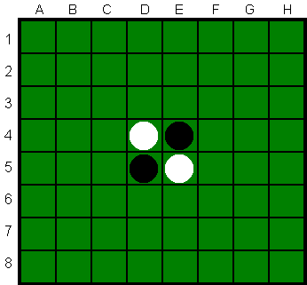
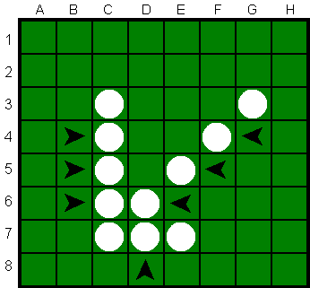
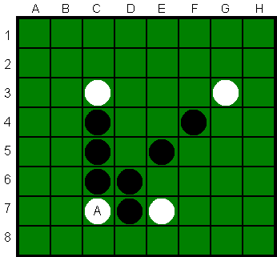

De opgave
 Het is de bedoeling om een C++-programma te maken dat de gebruiker in staat stelt het spel Othello (zie ook Reversi) te spelen via een eenvoudig menu.Othello-borden worden in het C++-programma gerepresenteerd door ingewikkelde pointer-structuren. Het is de bedoeling een klasse OthelloBord te maken, die onder meer memberfuncties heeft als afdrukken, menszet en computerzet. Uiteraard heeft deze klasse ook een constructor en een destructor. Verder moeten gedane zetten met behulp van een stapel ongedaan gemaakt kunnen worden, en kan het aantal vervolgpartijen worden uitgerekend (als je deze twee mogelijkheden niet hebt kost dat een punt).
Het "normale" spel Othello gaat als volgt.
Op een 8 bij 8 bord wordt gespeeld met schijfjes die
aan de ene kant wit en aan de andere kant zwart (of rood) zijn.
Om de beurt leggen de spelers, wit W en zwart
Z geheten,
een schijfje met hun eigen kleur naar boven
op een nog leeg vakje.
Dit mag alleen op een plek zodat stenen van de tegenstander
geslagen worden.
Stenen van de tegenstander die ingesloten raken, hetzij horizontaal, of
verticaal, of diagonaal, tussen eigen stenen, worden geslagen:
ze worden omgekeerd, en krijgen dus de eigen kleur;
dit geldt ook voor meerdere stenen en richtingen.
Zwart begint.
Als een speler niet kan zetten, is het spel direct afgelopen, bijvoorbeeld ook als het bord vol is.
Winnaar is dan degene met de meeste stenen in zijn of haar kleur;
in dit geval win je met "het verschil in aantal stenen";
gelijk spel is ook mogelijk.
(In het echte Othello is dit iets anders, overigens.)
Voor de vierde programmeeropgave hoeft het niet grafisch
(net als in de voorbeeld-standen hier onder),
en het programma hoeft niet zo goed te spelen, maar
wel volgens de regels!
De beginconfiguratie voor Othello staat links hieronder
(en ook in het plaatje rechtsboven; voor Reversi is deze overigens iets anders),
gevolgd door enkele voorbeeldzetten:
. . . . . . . . . . . . . . . . . . . . . . . .
. . . . . . . . . . . . . . . . . . . . . . . .
. . . . . . . . . . . . . . . . . . . . . . . .
. . . W Z . . . . . . W Z . . . . . . W Z . . .
. . . Z W . . . . . . Z Z Z . . . . . Z W Z . .
. . . . . . . . . . . . . . . . . . . . . W . .
. . . . . . . . . . . . . . . . . . . . . . . .
. . . . . . . . . . . . . . . . . . . . . . . .
In één zet kunnen stenen uit verschillende richtingen tegelijk
geslagen worden. De stenen moeten echt aan beide zijden
ingesloten raken om geslagen te worden. In een richting
kunnen meerdere stenen tegelijk geslagen worden.
Op de kleurenplaatjes (van www.othello.nl)
worden bij het zetten op plek A (positie C7) zeven schijven van zwart omgedraaid.
 
We spelen het spel met aangepaste regels.
Allereerst moet gekozen worden of Zwart een mens of een computer is,
en daarna of Wit een mens of een computer is.
Het moet ook mogelijk zijn de computer tegen zichzelf te laten spelen.
Daarna mag ook de grootte van het bord gekozen worden:
het aantal rijen m en het aantal kolommen n,
beide minstens 2.
Normaal geldt dus dat m=8 en n=8.
De vier beginschijven staan (ongeveer) in het midden.
Als beide spelers een computerspeler zijn, wordt er ook gevraagd hoeveel
spelletjes er moeten worden gespeeld — voor de statistieken.
Als dat er meer dan één zijn,
wordt niet steeds het speelbord afgedrukt.
Als de speler aan zet is, wordt de stand, in eenvoudig formaat, op het scherm getoond, en kan de speler zijn/haar zet doen, of juist de laatste eigen zet (en meteen de tussenliggende mens/computerzet) terugnemen, of het aantal mogelijke vervolgpartijen voor de huidige stand laten uitrekenen. De speler kan eenvoudig coordinaten kiezen; je mag zelf kiezen of de rijen van boven naar beneden of juist andersom nummeren, of letters gebruiken zoals bij de derde opgave. De door de speler uitgekozen zet wordt gedaan, waarna (bijvoorbeeld) de computer een willekeurige (gebruik een randomgenerator, bijvoorbeeld rand ( )), maar uiteraard wel toegestane, zet doet. Liefhebbers mogen natuurlijk hun eigen creativiteit inzetten, door bijvoorbeeld de computerzet waarbij de meeste stenen geslagen worden te kiezen — wat overigens niet altijd het beste is.
Schrijf een functie voor de klasse OthelloBord die een pointerstructuur aanlegt, waarbij ieder vakje, naast bijvoorbeeld een char als inhoud, tevens een array met 8 pointers naar de onmiddellijke buren heeft: middenboven (0), rechtsboven, rechts, rechtsonder, middenonder, linksonder, links en linksboven (7). De vakjes aan de randen bevatten uiteraard diverse nullptrs. Het bord is dus niet een m bij n array, maar een zeer ingewikkelde pointerstructuur.
Alle tussenstanden moeten op een stapel worden bijgehouden, en spelerzetten kunnen daarmee zelfs herhaald teruggenomen worden. Hiertoe moeten dus alle standen (en niet de zetten) worden onthouden, of liever gezegd: zodra de speler zet, wordt de oude stand (het complete bord) opgeslagen. Er moet dus een memberfunctie kopieer gemaakt worden, die de gehele pointerstructuur kopieert! Dit onderdeel is zeker niet eenvoudig; mocht het ontbreken, dan kost dat een halve punt.
Verder dient er een recursieve memberfunctie vervolg geschreven te worden die gegeven een zekere stand het totale aantal mogelijke vervolgpartijen, dat overigens erg groot kan zijn, uitrekent. Hiervoor moeten alle mogelijke zetten van beide spelers doorgerekend worden. Ook dit onderdeel is zeker niet eenvoudig; mocht het ontbreken, dan kost dat een halve punt.
Het is de bedoeling om minimaal een drietal files te produceren:
de eerste bevat main en het eenvoudige menu,
de tweede (zeg othello.h) bevat de klasse-definitie van het Othello-bord,
en de derde (zeg othello.cc) bevat de functies uit die klasse.
Daarbij komen wellicht nog files stapel.h en stapel.cc.
Maak ook een makefile.
Maak bij voorkeur gebruik te maken van de volgende
voorbeeldfiles, van waaruit de opgave stap voor stap kan worden gedaan.
Je kunt ook je eigen files met andere functies maken, maar gesplitst moet er worden.
De files zijn:
- File met main: hoofd.cc.
- Headerfile met klassen: othellobord.h.
- Bijbehorende C++-file: othellobord.cc.
- En de bijpassende makefile (let op de TABs).
Opmerkingen
Gebruik geschikte (member)functies.
Bij deze opgave mogen wederom bij
elke functie (zelfs main) tussen begin-{ en
eind-} hooguit circa 30 niet al te volle regels staan!
Elke functie dient van commentaar voorzien te zijn.
Let op goed parametergebruik: alle parameters, met uitzondering van membervariabelen, in de heading doorgeven, en de
variabele-declaraties zowel bij main als bij de
andere functies aan het begin.
De enige te gebruiken headerfiles zijn in principe
iostream, cstdlib en ctime
(voor de random-generator).
Zeer ruwe indicatie voor de lengte van de gezamenlijke C++-files: 500 regels.
Denk aan het infoblokje.
Een vier-weken-schema:
- week 1: pointerpracticum, opgave lezen
- week 2: klassen. pointerbord, meerdere files, ruw spelen
- week 3: spel helemaal in orde maken, (stapel)
- week 4: (vervolgpartijen), experiment (gnuplot), verslag
Uiterste inleverdatum: 08 December 2025, 18:00 uur.
Manier van inleveren:
- Digitaal de C++-code inleveren via Brightspace > Course Tools > Assignments. Stuur geen executable's, LaTeX-files of PDF-files, lever alleen één C++-file digitaal in!
- Doe een print van het verslag in de doos bij Gorleaus BM.2.05.
Het verslag (uiteraard weer in LaTeX, zie de eerdere opgaven) moet het volgende bevatten: een zeer korte beschrijving van het programma, een beschrijving van punten waarop het programma faalt (indien van toepassing), en een tabel met gewerkte uren, uitgesplitst per week en per persoon. En uitleg en een referentie betreffende Othello, en een over computers en Othello. En tekst en een of meer grafiekjes (zie het bijbehorende werkcollege) die een experiment met Othello illustreren. Speel flinke aantallen spelletjes (wie wint er? na hoeveel zetten? met hoeveel punten?), en geef zo mogelijk enkele aantallen vervolgpartijen. Te gebruiken compiler: als hij maar C++ vertaalt; het programma moet in principe zowel op een Linux-machine (met g++) als onder Visual C++ of Dev-C++ draaien. Test dus in principe op beide systemen! Het programma wordt doorgaans nagekeken met behulp van de compiler die (uiteraard) in het commentaar bovenin het programma vermeld staat. Normering: layout 1; verslag 1; experiment 1; commentaar 1; modulariteit (OOP, functies) 2; werking 4.